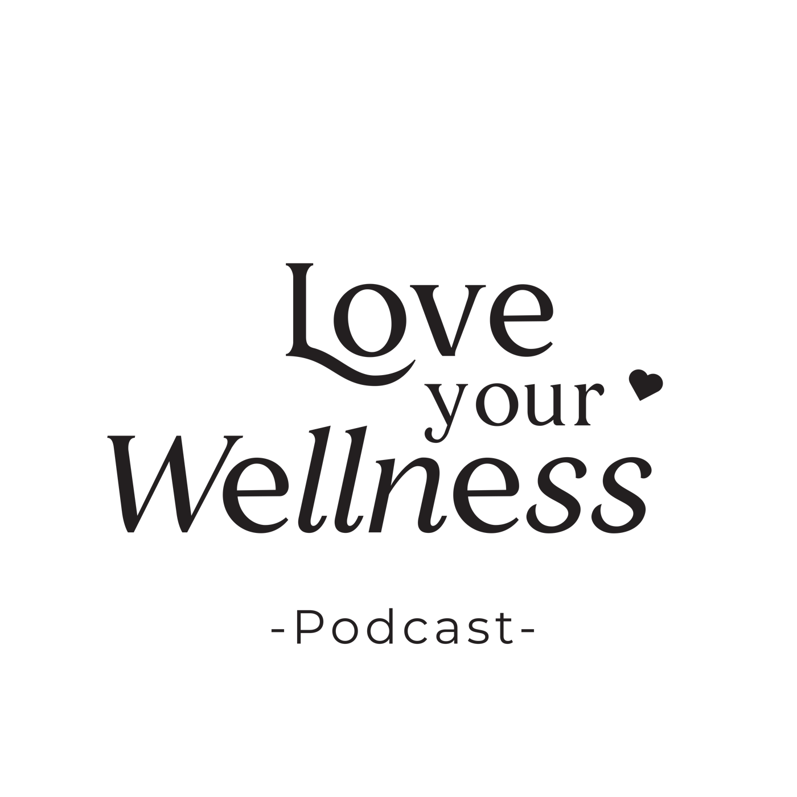
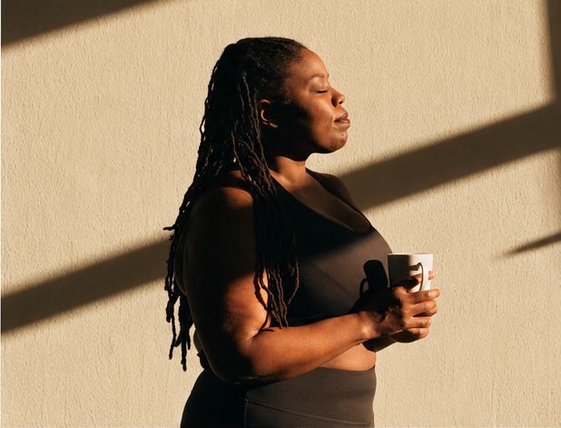

Branding / Visual Identity
Love Your Wellness

A space for emotional healing
& holistic living.

01 / The intention
A softer way
to show up.
Love Your Wellness is a wellness podcast centered around emotional healing, self-care, and holistic living. I developed a refreshed visual identity that feels warm, approachable, and intentional, using soft colors, elegant typography, and imagery that celebrates wellness in everyday life.
Brand identity redesign / Charis Enty
02 / The identity
Warm by nature.
Intentional by design.
A gentle balance.
Elegant serif letterforms, soft tones, and a small heart detail give the identity its warm, welcoming character.
Original typography and logo artwork are preserved in the brand board.
Sunday Garden
#C7CBB4
Blush Latte
#EFCAD6
Rose on the Porch
#D4A5A5
Honeyed Almond
#E7D5C6
Caramel Cocoa
#3A2F2F
03 / Photography
Wellness in
the everyday.
04 / The identity in use
A world that
feels like home.
A space to listen.
Part of the everyday.
The little details.
Love Your Wellness / Brand identity